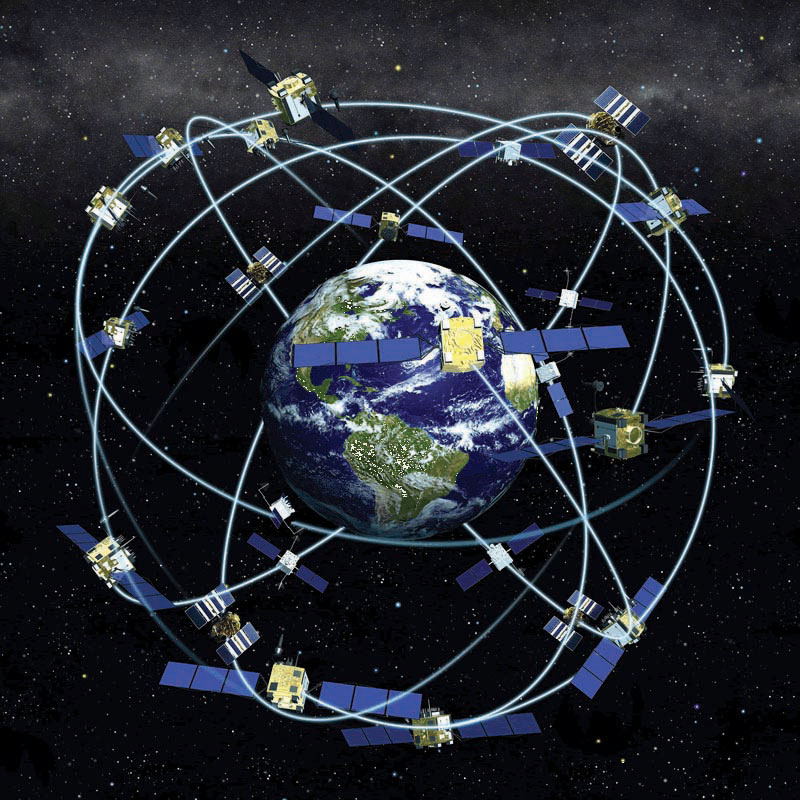
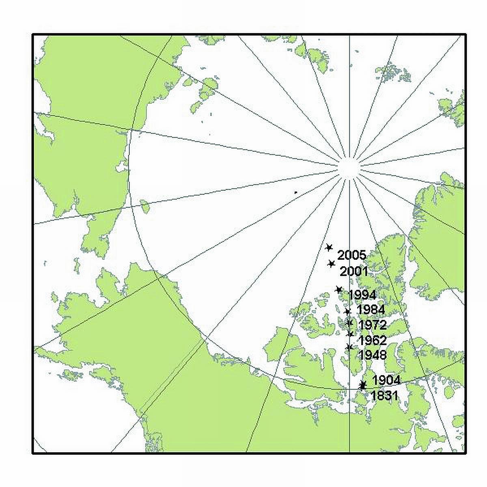
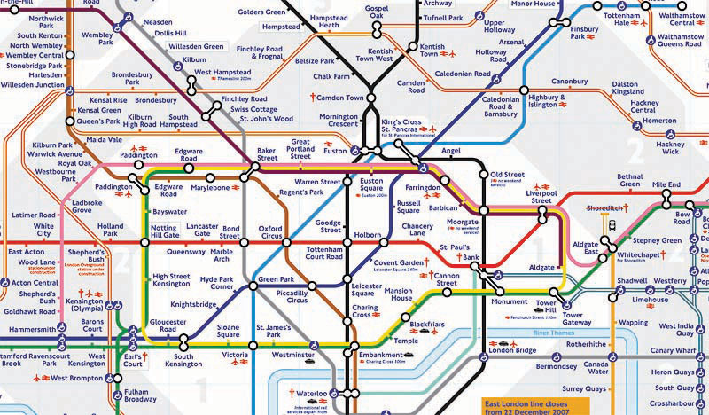
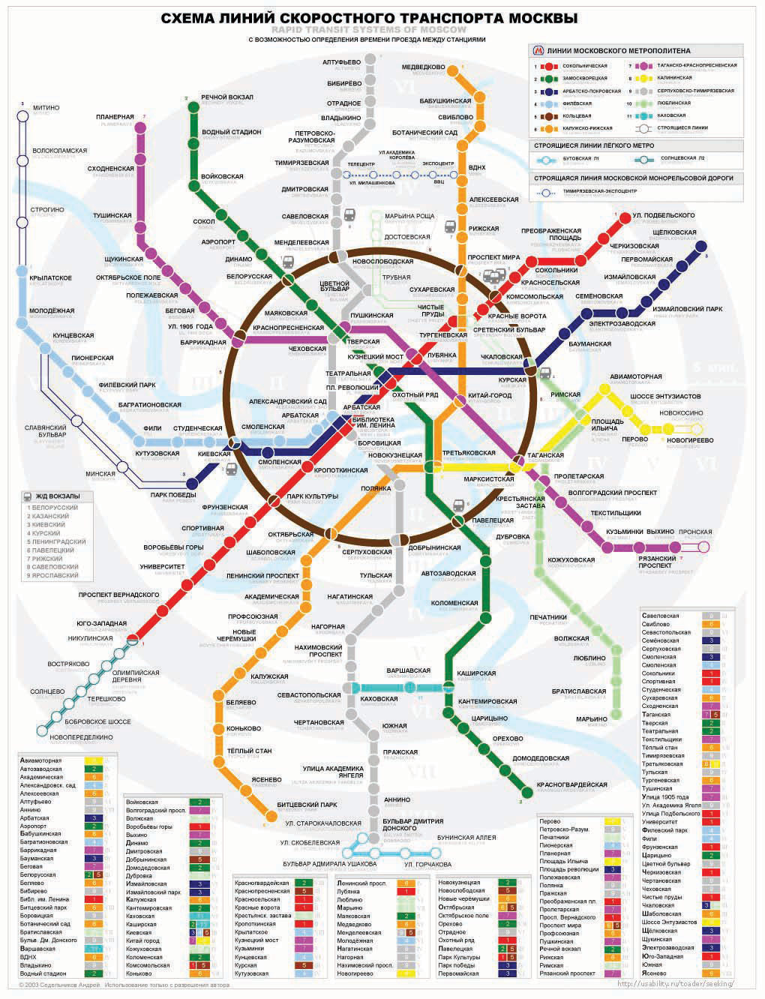

Before we can learn “how to do” a geographic information system (GIS), it is first necessary to review and reconsider a few key geographic concepts that are often taken for granted. For instance, what is a location and how can it be defined? At what distance does a location become “nearby”? Or what do we mean when we say that someone has a “good sense of direction”? By answering these and related questions, we establish a framework that will help us to learn and to apply a GIS. This framework will also permit us to share and communicate geographic information with others, which can facilitate collaboration, problem solving, and decision making.
The one concept that distinguishes geography from other fields is location, which is central to a GIS. LocationPosition on the surface of the earth. is simply a position on the surface of the earth. What is more, nearly everything can be assigned a geographic location. Once we know the location of something, we can a put it on a map, for example, with a GIS.
Generally, we tend to define and describe locations in nominal or absolute terms. In the case of the former, locations are simply defined and described by name. For example, city names such as New York, Tokyo, or London refer to nominal locations. Toponymy, or the study of place names and their respective history and meanings, is concerned with such nominal locations (Monmonier 1996, 2006).Monmonier, M. 1996. How to Lie with Maps. Chicago: University of Chicago Press., ———. 2006. From Squaw Tit to Whorehouse Meadow: How Maps Name, Claim, and Inflame. Chicago: University of Chicago Press. Though we tend to associate the notion of location with particular points on the surface of the earth, locations can also refer to geographic features (e.g., Rocky Mountains) or large areas (e.g., Siberia). The United States Board on Geographic Names (http://geonames.usgs.gov) maintains geographic naming standards and keeps track of such names through the Geographic Names Information Systems (GNIS; http://geonames.usgs.gov/pls/gnispublic). The GNIS database also provides information about which state and county the feature is located as well as its geographic coordinates.
Contrasting nominal locations are absolute locations that use some type of reference system to define positions on the earth’s surface. For instance, defining a location on the surface of the earth using latitude and longitude is an example of absolute location. Postal codes and street addresses are other examples of absolute location that usually follow some form of local logic. Though there is no global standard when it comes to street addresses, we can determine the geographic coordinates (i.e., latitude and longitude) of particular street addresses, zip codes, place names, and other geographic data through a process called geocodingAssigning latitude and longitude to phenonmena on the earth’s surface.. There are several free online geocoders (e.g., http://worldkit.org/geocoder) that return the latitude and longitude for various locations and addresses around the world.
With the advent of the global positioning system (GPS)The network of satellites orbitting the earth, transmitting signals from which latitude and longitude can be obtained with GPS units. (see also http://www.gps.gov), determining the location of nearly any object on the surface of the earth is a relatively simple and straightforward exercise. GPS technology consists of a constellation of twenty-four satellites that are orbiting the earth and constantly transmitting time signals (see Figure 1.4 "Constellation of Global Positioning System (GPS) Satellites"). To determine a position, earth-based GPS units (e.g., handheld devices, car navigation systems, mobile phones) receive the signals from at least three of these satellites and use this information to triangulate a location. All GPS units use the geographic coordinate system (GCS) to report location. Originally developed by the United States Department of Defense for military purposes, there are now a wide range of commercial and scientific uses of a GPS.
Figure 1.4 Constellation of Global Positioning System (GPS) Satellites
Location can also be defined in relative terms. Relative location refers to defining and describing places in relation to other known locations. For instance, Cairo, Egypt, is north of Johannesburg, South Africa; New Zealand is southeast of Australia; and Kabul, Afghanistan, is northwest of Lahore, Pakistan. Unlike nominal or absolute locations that define single points, relative locations provide a bit more information and situate one place in relation to another.
Like location, the concept of direction is central to geography and GISs. DirectionThe position of a feature of phenonmenon on the surface of the earth relative to something else. refers to the position of something relative to something else usually along a line. In order to determine direction, a reference point or benchmark from which direction will be measured needs to be established. One of the most common benchmarks used to determine direction is ourselves. Egocentric direction refers to when we use ourselves as a directional benchmark. Describing something as “to my left,” “behind me,” or “next to me” are examples of egocentric direction.
As the name suggests, landmark direction uses a known landmark or geographic feature as a benchmark to determine direction. Such landmarks may be a busy intersection of a city, a prominent point of interest like the Colosseum in Rome, or some other feature like a mountain range or river. The important thing to remember about landmark direction, especially when providing directions, is that the landmark should be relatively well-known.
In geography and GISs, there are three more standard benchmarks that are used to define the directions of true north, magnetic north, and grid north. True north is based on the point at which the axis of the earth’s rotation intersects the earth’s surface. In this respect the North and South Poles serve as the geographic benchmarks for determining direction. Magnetic north (and south) refers to the point on the surface of the earth where the earth’s magnetic fields converge. This is also the point to which magnetic compasses point. Note that magnetic north falls somewhere in northern Canada and is not geographically coincident with true north or the North Pole. Grid north simply refers to the northward direction that the grid lines of latitude and longitude on a map, called a graticule, point to.
Figure 1.5 The Three Norths: True, Magnetic, and Grid
Complementing the concepts of location and direction is distance. DistanceThe amount of separation between locations. refers to the degree or amount of separation between locations and can be measured in nominal or absolute terms with various units. We can describe the distances between locations nominally as “large” or “small,” or we can describe two or more locations as “near” or “far apart.” Absolute distance is measured or calculated using a standard metric. The formula for the distance between two points on a planar (i.e., flat) surface is the following:
Calculating the distance between two locations on the surface of the earth, however, is a bit more involved because we are dealing with a three-dimensional object. Moving from the three-dimensional earth to two-dimensional maps on paper, computer screens, and mobile devices is not a trivial matter and is discussed in greater detail in Chapter 2 "Map Anatomy".
We also use a variety of units to measure distance. For instance, the distance between London and Singapore can be measured in miles, kilometers, flight time on a jumbo jet, or days on a cargo ship. Whether or not such distances make London and Singapore “near” or “far” from each other is a matter of opinion, experience, and patience. Hence the use of absolute distance metrics, such as that derived from the distance formula, provide a standardized method to measure how far away or how near locations are from each other.
Where distance suggests a measurable quantity in terms of how far apart locations are situated, space is a more abstract concept that is more commonly described rather than measured. For example, space can be described as “empty,” “public,” or “private.”
Within the scope of a GIS, we are interested in space, and in particular, we are interested in what fills particular spaces and how and why things are distributed across space. In this sense, spaceThe conceptual expanse or void that is filled with geographic phenomena. is a somewhat ambiguous and generic term that is used to denote the general geographic area of interest.
One kind of space that is of particular relevance to a GIS is topological space. Simply put, topological space is concerned with the nature of relationships and the connectivity of locations within a given space. What is important within topological space are (1) how locations are (or are not) related or connected to each other and (2) the rules that govern such geographic relationships.
Transportation maps such as those for subways provide some of the best illustrations of topological spaces (see Figure 1.6 "Metro Map from London" and Figure 1.7 "Metro Map from Moscow"). When using such maps, we are primarily concerned with how to get from one stop to another along a transportation network. Certain rules also govern how we can travel along the network (e.g., transferring lines is possible only at a few key stops; we can travel only one direction on a particular line). Such maps may be of little use when traveling around a city by car or foot, but they show the local transportation network and how locations are linked together in an effective and efficient manner.
Figure 1.6 Metro Map from London
Figure 1.7 Metro Map from Moscow
Transportation maps like those discussed previously illustrate how we move through the environments where we live, work, and play. This movement and, in particular, destination-oriented travel are generally referred to as navigationThe destination-oriented travel through space.. How we navigate through space is a complex process that blends together our various motor skills; technology; mental maps; and awareness of locations, distances, directions, and the space where we live (Golledge and Stimson 1997).Golledge, R., and R. Stimson. 1997. Spatial Behavior: A Geographic Perspective. New York: Guilford. What is more, our geographical knowledge and spatial awareness is continuously updated and changed as we move from one location to another.
The acquisition of geographic knowledge is a lifelong endeavor. Though several factors influence the nature of such knowledge, we tend to rely on the three following types of geographic knowledge when navigating through space:
Each type of geographic knowledge is acquired in stages, one after the other. For instance, when we find ourselves in a new or an unfamiliar location, we usually identify a few unique points of interest (e.g., hotel, building, fountain) to orient ourselves. We are in essence building up our landmark knowledge. Using and traveling between these landmarks develops our route knowledge and reinforces our landmark knowledge and our overall geographical awareness. Survey knowledge develops once we begin to understand how routes connect landmarks together and how various locations are situated in space. It is at this point, when we are somewhat comfortable with our survey knowledge, that we are able to take shortcuts from one location to another. Though there is no guarantee that a shortcut will be successful, if we get lost, we are at least expanding our local geographic knowledge.
Landmark, route, and survey knowledge are the cornerstones of having a sense of direction and frame our geographical learning and awareness. While some would argue that they are born with a good sense of direction, others admit to always getting lost. The popularity of personal navigation devices and online mapping services speaks to the overwhelming desire to know and to situate where we are in the world. Though developing and maintaining a keen sense of direction presumably matters less and less as such devices and services continue to develop and spread, it can also be argued that the more we know about where we are in the world, the more we will want to learn about it.
This section covers concepts essential to geography, GISs, and many other fields of interest. Understanding how location, direction, and distance can be defined and described provides an important foundation for the successful use and implementation of a GIS. Thinking about space and how we navigate through it also serves to improve and own geographic knowledge and spatial awareness.